Different ways to Shut down a PC
Method-1: Using the Start Menu
1. Click on the Start menu (Windows icon) at the bottom left corner of your screen.

2. Click on the Power icon.
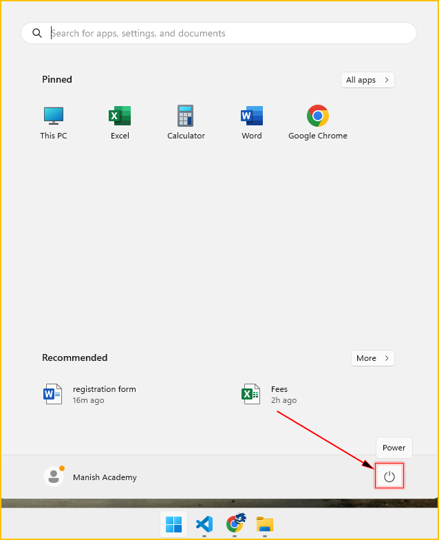
3. Click Shut down.
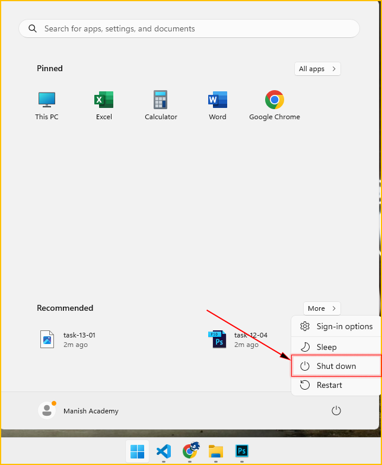
Method-2: Using Keyboard Shortcut
First close all the applications.
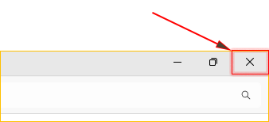
Steps
1. Press Alt + F4 on your keyboard while on the desktop.
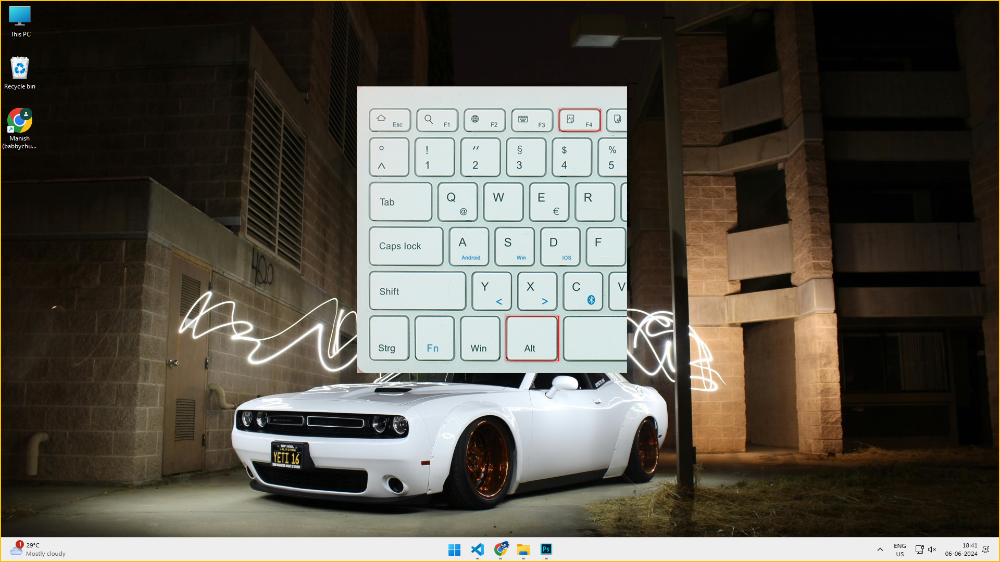
2. In the "Shut Down Windows" dialog box, select "Shut down" from the drop-down menu..
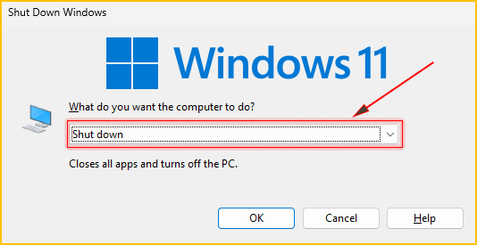
3. Click "OK" or press Enter.
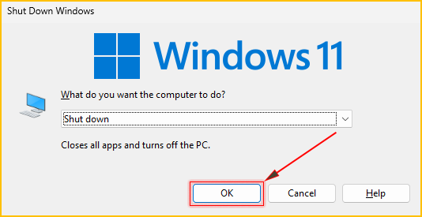
Method-3: Using Ctrl + Alt + Delete
1. Using Ctrl + Alt + Delete.
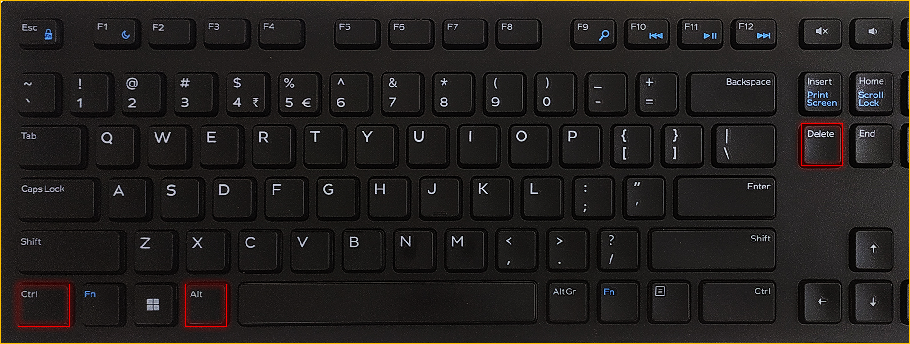
2. Click the Power icon in the bottom-right corner of the screen and select Shut down.
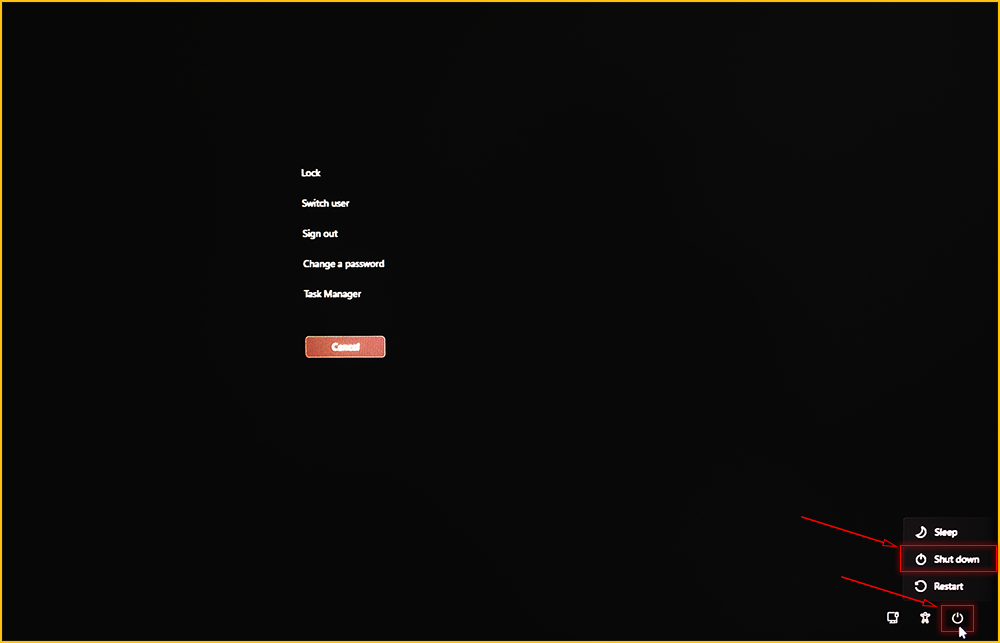
Method-4: Using the Power User Menu
1. Right click on the windows icon.
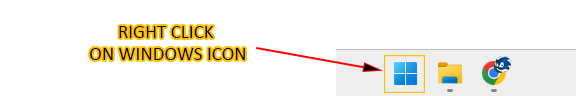
OR You can use the shortcut  +X at the place of right click.
+X at the place of right click.
2. Click Shut down or sign out and then click Shut down.
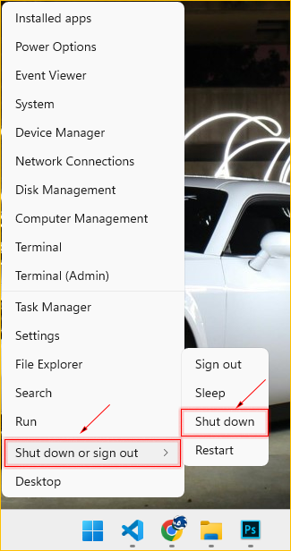
Method 5: Using Command Prompt
1. Click on the Start menu (Windows icon).
2. Search for Command Prompt and hit enter.
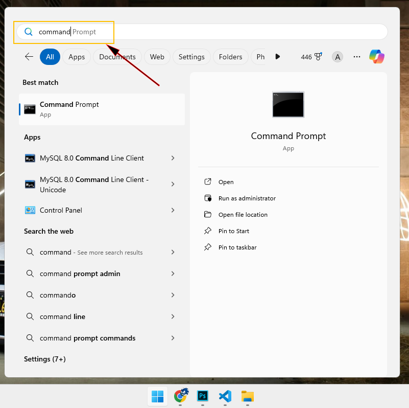
3. Type shutdown /s /f /t 0 and press Enter.
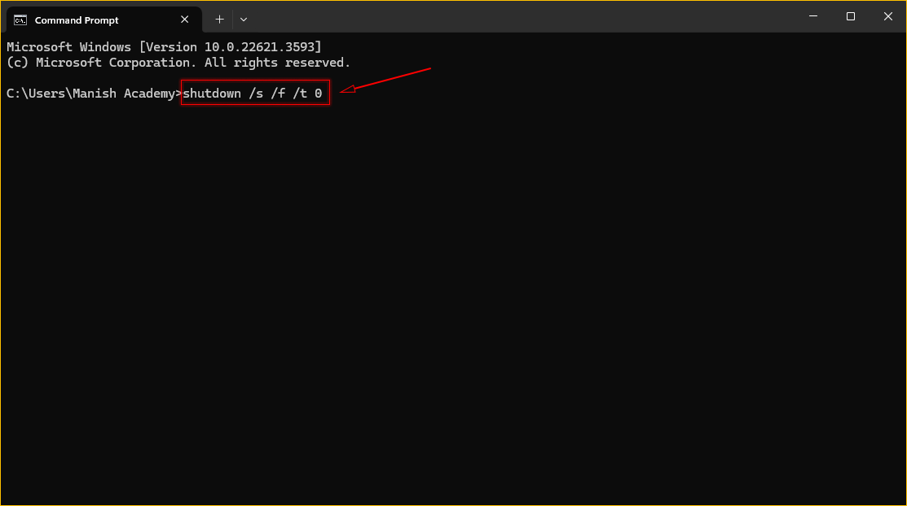
Method 6: Using the Power Button.
1. Press and hold the physical power button on your PC for a few seconds(1-2 seconds).
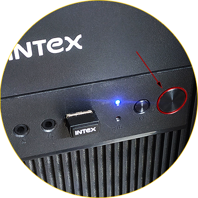
*This method should be used as a last resort, as it forces the PC to shut down and may result in data loss.